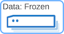

Hot/Frozen - High Availability
editThe Hot/Frozen High Availability architecture is cost optimized for large time-series datasets. In this architecture, the hot tier is primarily used for indexing, searching, and continuity for automated processes. Searchable snapshots are taken from hot into a repository, such as a cloud object store or an on-premises shared filesystem, and then cached to any desired volume on the local disks of the frozen tier. Data in the repository is indexed for fast retrieval and accessed on-demand from the frozen nodes. Index and snapshot lifecycle management are used to automate this process.
This architecture is ideal for time-series use cases, such as Observability or Security, that do not require updating. All the necessary components of the Elastic Stack are included. This is not intended for sizing workloads, but rather as a basis to ensure that your cluster is ready to handle any desired workload with resiliency. A very high level representation of data flow is included, and for more detail around ingest architecture see our ingest architectures documentation.
Hot/Frozen use case
editThis Hot/Frozen – High Availability architecture is intended for organizations that:
- Have a requirement for cost effective long term data storage (many months or years).
- Provide insights and alerts using logs, metrics, traces, or various event types to ensure optimal performance and quick issue resolution for applications.
- Apply machine learning anomaly detection to help detect patterns in time series data to find root cause and resolve problems faster.
- Use an AI assistant (Observability, Security, or Playground) for investigation, incident response, reporting, query generation, or query conversion from other languages using natural language.
- Deploy an architecture model that allows for maximum flexibility between storage cost and performance.
Automated operations that frequently read large data volumes require both high availability (replicas) and predictable low latency (hot, warm or cold tier).
- Common examples of these tasks include look-back windows on security detection/alert rules, transforms, machine learning jobs, or watches; and long running scroll queries or external extract processes.
- These operations should be completed before moving the data into a frozen tier.
Architecture
editWe use an Availability Zone (AZ) concept in the architecture above. When running in your own Data Center (DC) you can equate AZs to failure zones within a datacenter, racks, or even separate physical machines depending on your constraints.
The diagram illustrates an Elasticsearch cluster deployed across 3 availability zones (AZ). For production we recommend a minimum of 2 availability zones and 3 availability zones for mission critical applications. See Plan for production for more details. A cluster that is running in Elastic Cloud that has data nodes in only two AZs will create a third master-eligible node in a third AZ. High availability cannot be achieved without three zones for any distributed computing technology.
The number of data nodes shown for each tier (hot and frozen) is illustrative and would be scaled up depending on ingest volume and retention period. Hot nodes contain both primary and replica shards. By default, primary and replica shards are always guaranteed to be in different availability zones in Elasticsearch Service, but when self-deploying shard allocation awareness would need to be configured. Frozen nodes act as a large high-speed cache and retrieve data from the snapshot store as needed.
Machine learning nodes are optional but highly recommended for large scale time series use cases since the amount of data quickly becomes too difficult to analyze. Applying techniques such as machine learning based anomaly detection or Search AI with large language models helps to dramatically speed up problem identification and resolution.
Recommended hardware specifications
editWith Elastic Cloud you can deploy clusters in AWS, Azure, and Google Cloud. Available hardware types and configurations vary across all three cloud providers but each provides instance types that meet our recommendations for the node types used in this architecture. For more details on these instance types, see our documentation on Elastic Cloud hardware for AWS, Azure, and GCP. The Physical column below is guidance, based on the cloud node types, when self-deploying Elasticsearch in your own data center.
In the links provided above, Elastic has performance tested hardware for each of the cloud providers to find the optimal hardware for each node type. We use ratios to represent the best mix of CPU, RAM, and disk for each type. In some cases the CPU to RAM ratio is key, in others the disk to memory ratio and type of disk is critical. Significantly deviating from these ratios may seem like a way to save on hardware costs, but may result in an Elasticsearch cluster that does not scale and perform well.
This table shows our specific recommendations for nodes in a Hot/Frozen architecture.
Type |
AWS |
Azure |
GCP |
Physical |
c6gd |
f32sv2 |
N2 |
16-32 vCPU |
|
 |
i3en |
e8dsv4 |
N2 |
8 vCPU |
m6gd |
f16sv2 |
N2 |
16 vCPU |
|
c5d |
f16sv2 |
N2 |
8 vCPU |
|
c6gd |
f16sv2 |
N2 |
8-16 vCPU |
Important considerations
editUpdating data:
- Typically, time series logging use cases are append-only and there is rarely a need to update documents. The frozen tier is read-only.
Multi-AZ frozen tier:
- Three availability zones is ideal, but at least two availability zones are recommended to ensure that there will be data nodes available in the event of an AZ failure.
Shard management:
- The most important foundational step to maintaining performance as you scale is proper shard management. This includes even shard distribution amongst nodes, shard size, and shard count. For a complete understanding of what shards are and how they should be used, refer to Size your shards.
Snapshots:
- If auditable or business critical events are being logged, a backup is necessary. The choice to back up data will depend on each individual business’s needs and requirements. Refer to our snapshot repository documentation to learn more.
- To automate snapshots and attach to Index lifecycle management policies, refer to SLM (Snapshot lifecycle management).
Kibana:
- If self-deploying outside of Elasticsearch Service, ensure that Kibana is configured for high availability.
How many nodes of each do you need?
editIt depends on:
- The type of data being ingested (such as logs, metrics, traces)
- The retention period of searchable data (such as 30 days, 90 days, 1 year)
- The amount of data you need to ingest each day
- The number of dashboards, queries, query types and how frequent they are run.
You can contact us for an estimate and recommended configuration based on your specific scenario.